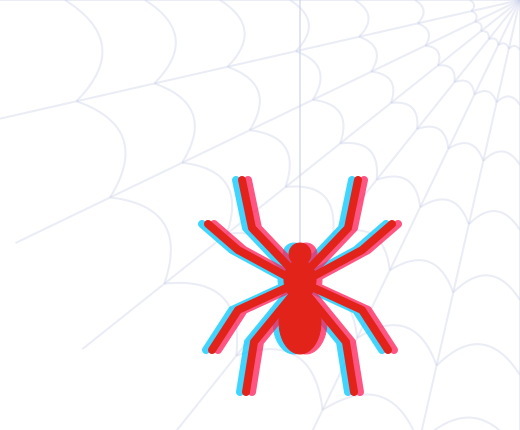
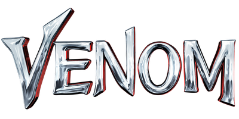

Sony Pictures · Marvel Studios · Sony Pictures Animation
Every Spider-Man
Four Spider-worlds ran side by side: Raimi, Webb, the MCU and Sony's Venom films. In story order they run as four parallel lanes that meet at No Way Home, then split again. The animated films and series are separate continuities, listed at the end.